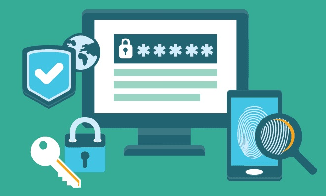

¡Tengamos buenos hábitos de higiene digital!
Sigue estos consejos básicos de seguridad informática y evita ser víctima de phishing, spammers o la presencia de algún malware escondido en tu equipo.

Imagen extraida de: https://blogs.unitec.mx/vida-universitaria/tips-super-basicos-de-seguridad-informatica/
El escenario de los delitos se traslada cada vez más del mundo físico al mundo digital.